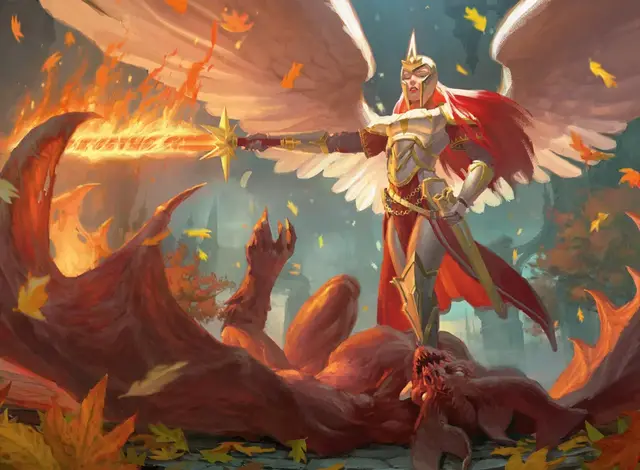

Огнегривый ангел
Firemane Angel
Средний Небожитель, хаотично-добрый

Класс Доспеха 18 (латы)
Хиты 135 (18к8 + 54)
Скорость 40 футов, летая 90 футов
| мод | спас | ||
|---|---|---|---|
| СИЛ | 22 | +6 | +10 |
| ЛОВ | 15 | +2 | +2 |
| ТЕЛ | 17 | +3 | +3 |
| мод | спас | ||
|---|---|---|---|
| ИНТ | 12 | +1 | +1 |
| МДР | 14 | +2 | +6 |
| ХАР | 23 | +6 | +10 |
Навыки Восприятие +6, Проницательность +6
Сопротивление урону излучение, огонь; дробящий, колющий, рубящий от немагических атак
Иммунитет к состояниям очарование, испуг, истощение
Чувства истинное зрение 120 футов, пассивное Восприятие 16
Языки Все
Опасность 12 (8400 опыта)
Бонус мастерства +4
Особенности
Облёт. Огнегривый ангел не провоцирует атаки, когда вылетает из досягаемости врага.
Сопротивление магии. Огнегривый ангел совершает с преимуществом спасброски от заклинаний и прочих магических эффектов.
Врождённое колдовство. . Базовой характеристикой огнегривого ангела является Харизма (Сл спасброска 18, +10 к атакам заклинаниями). Он может накладывать следующие заклинания, не нуждаясь ни в каких компонентах:
• 3/день каждое: вызов на дуэль [compelled duel], направляющий снаряд [guiding bolt] (как заклинание 5-го уровня)
• 1/день каждое: дневной свет [daylight], огненный шар [fireball] (как заклинание 6-го уровня)
Непреклонность (Перезаряжается после короткого или продолжительного отдыха). Если ангел получает 21 урона или меньше, которые опускают его хиты до 0, вместо этого урон опускает её хиты до 1.
Действия
Мультиатака. Ангел совершает две рукопашные атаки.
Длинный меч. . Рукопашная атака оружием: +10 к попаданию, досягаемость 5 футов, одна цель. Попадание: Рубящий урон 10 (1к8 + 6) или рубящий урон 11 (1к10 + 6) если используется двумя руками плюс урон излучением или огнём (на выбор ангела) 22 (5к8).
Описание
Огнегривые ангелы — святые воины и совершенные мастера войны, они лучше всего сражаются с одиночным противником. Эти могучие воители ищут сильнейших врагов в любой битве, доверяя менее сильным соратником разобраться с более слабыми противниками.
Подобно многим другим ангелам Легиона Бороса, у огнегривых ангелов красные и рыжие волосы. В пылу битвы волосы огнегривых ангелов способны воспламеняться, превращаясь в ниспадающую огненную гриву.
Ангелы Бороса
Ангелы Легиона Бороса считают себя воплощением того, что задумал их создатель. Они свирепые воины, преданные справедливости и посвятившие себя защите слабых от зла и угнетения. Они командиры, советники, стратеги и солдаты. Их присутствие в бою вдохновляет смертных солдат легиона праведным рвением. Большинство солдат Бороса считают, что ангелы являются образцами добра, мудрости и милосердия. Реальность такова, что ангелы не защищены от соблазнов коррупции, и необходимость политических махинаций может скомпрометировать лучших из них.
Военачальники. Самые мудрые, самые дальновидные ангелы отвечают за формирование и реализацию военной стратегии Легиона Бороса. Поскольку они бессмертны, их планы могут охватывать столетия, и они, как известно, принимают десятилетия потерь как разумную цену за более значительную победу много лет спустя. Эти военачальники используют характеристики планетара или солара (как представлено в Бестиарии), но их внешний вид похож на других ангелов Бороса.